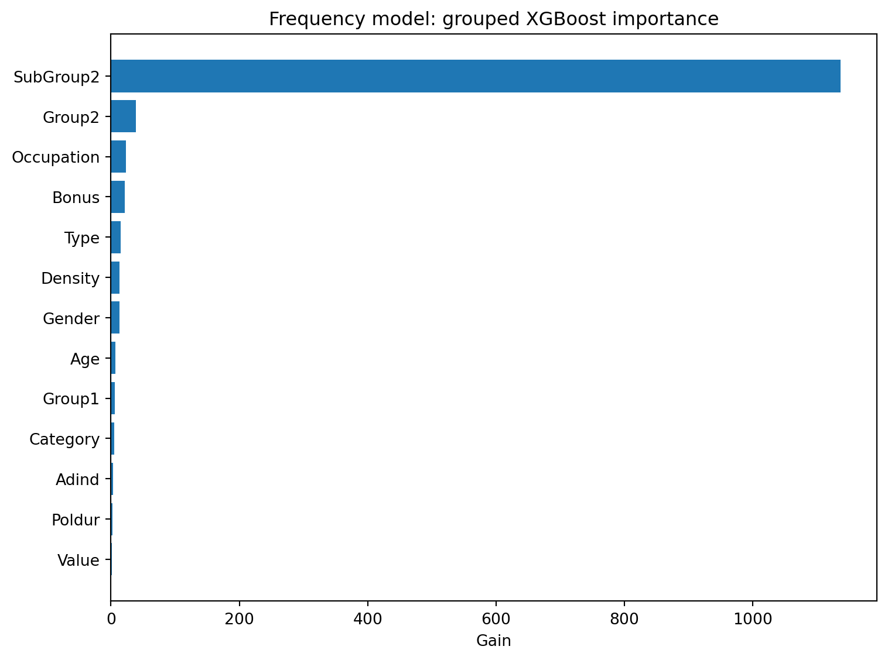
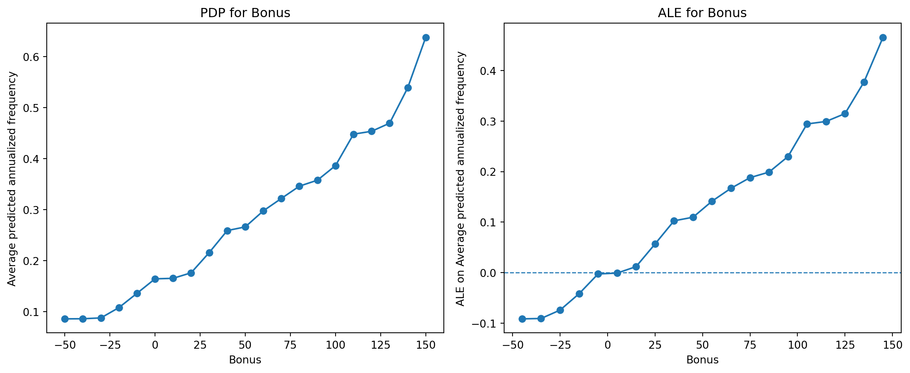
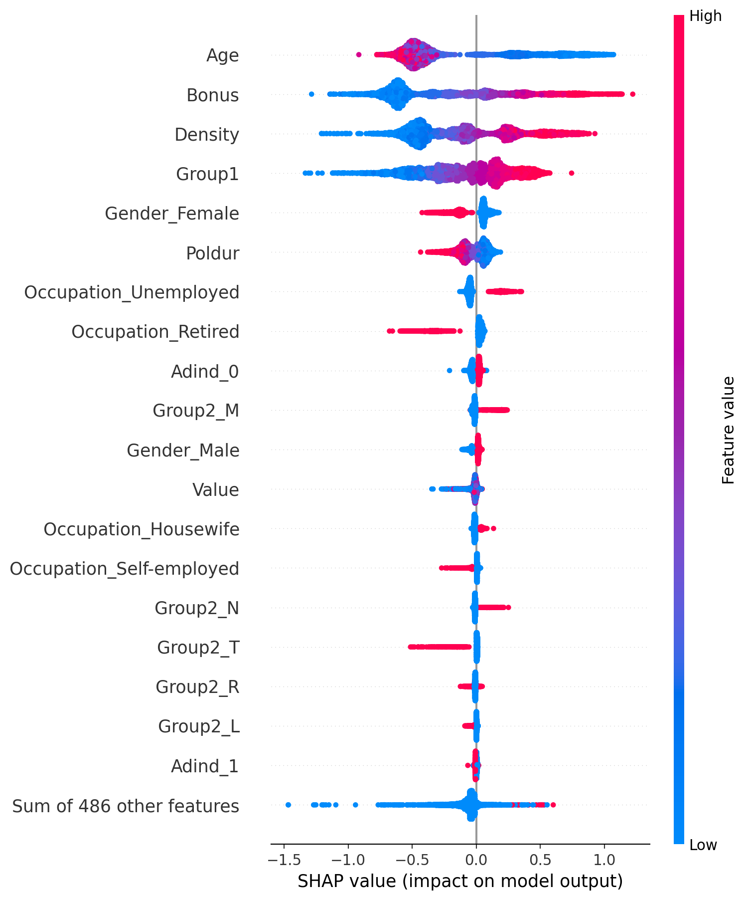
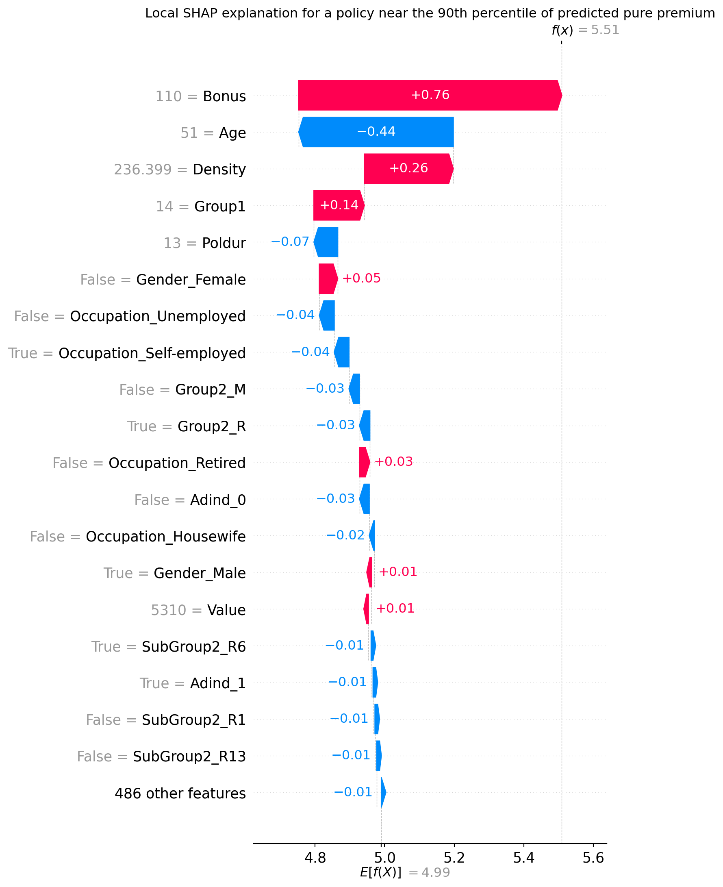
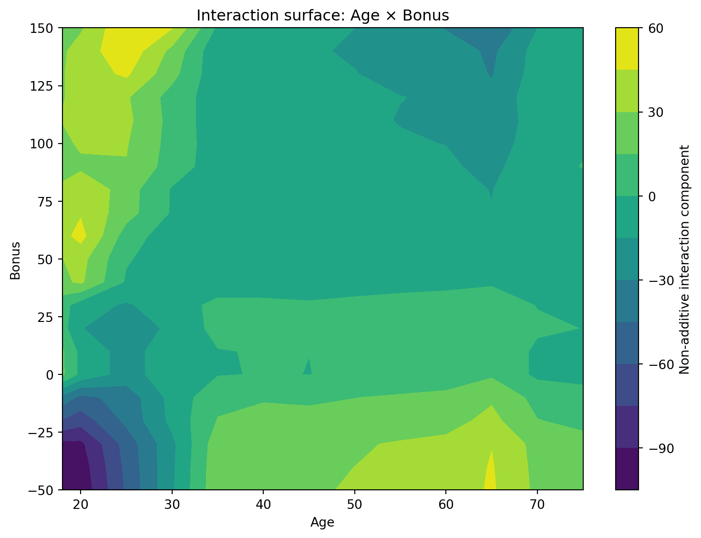

可解释性实践
幻灯片 — 第五章
今日安排
约2小时课程,实操为主,五个部分,五次讨论环节
| 时间 | 部分 |
|---|---|
| 0:00 – 0:10 | 动机:为何需要可解释性,监管背景 |
| 0:10 – 0:25 | 环境准备、工作流程与案例研究 |
| 0:25 – 0:50 | 特征重要性 |
| 0:50 – 1:15 | 主效应、PDP 与 ALE |
| 1:15 – 1:25 | 休息 |
| 1:25 – 1:55 | SHAP,全局与局部 |
| 1:55 – 2:10 | 交互效应与小结 |
学习目标
- 端到端地将事后可解释性付诸实践:重要性 → PDP/ALE → SHAP → 交互效应
- 解读全局变量重要性及其局限
- 使用 PDP 和 ALE 观察预测变量与预测结果之间的关系
- 从全局和单次预测两个层面解读 SHAP 值
- 使用 H统计量和 SHAP 交互值检测交互效应
动机
💬 讨论(2分钟)
人工智能在各行各业(包括保险业)的应用日益广泛,由此带来了复杂黑箱模型的广泛使用。
这一转变带来了哪些益处,又潜藏着哪些风险?
人工智能的益处与风险
- 益处:提升效率与准确性
- 风险:缺乏透明性与可解释性
我们为何需要解释?
在展示答案前:你会如何回答?
- 透明性与可解释性:向消费者、监管机构与管理者说明模型如何作出决策,建立信任
- 理解特征重要性
- 理解输入与输出之间的关系(主效应)
- 识别并可视化交互效应
- 回答”为什么”,而不只是”是什么”——因果关系
- 公平性:避免歧视与偏见
- 隐私:确保敏感信息受到保护
- 模型验证与稳健性检查
可解释性的监管背景
可解释性、可说明性与透明性,是各类人工智能原则性文件中反复出现的要求:
- 斯坦福以人为本人工智能研究院(HAI):于2022年1月提交白皮书,支持白宫科技政策办公室(OSTP)制定人工智能权利法案
- 澳大利亚人工智能伦理原则
- 欧盟《通用数据保护条例》(GDPR)(Regulation (EU) 2016/679 of the European Parliament and of the Council (General Data Protection Regulation) 2016年):赋予”解释权”
- 这项权利在 GDPR 下是否真正存在,本身即存在争议 (Wachter 等 2017年; Bordt 等 2022年)
- 中国《个人信息保护法》第24条 (National People’s Congress (China) 2021年):要求自动化决策保持透明、结果公平,并同样赋予解释权
保险监管实例:NAIC
- 美国全国保险监理官协会(NAIC)2022年《预测模型白皮书》(National Association of Insurance Commissioners 2022年) 将费率备案审查范围从广义线性模型(GLM)扩展到基于树的模型(随机森林、梯度提升)
- 该白皮书 B.3.d 条要求保险公司:
- 获取描述每个预测变量与目标变量之间关系的图表
- 就所观察到的关系给出合理的解释
解释方法的全貌
(部分)可解释、透明的模型
- 线性模型(LM)、广义线性模型(GLM)、广义可加模型(GAM)、决策树(CART)
全局、与模型无关的方法
- PD 图、ALE 图、特征交互(H统计量)、功能分解、置换特征重要性
局部、与模型无关的方法
- 个体条件期望(ICE)曲线、局部代理模型(LIME)、SHAP、反事实解释、范围规则(锚点法)
第一部分——环境准备
工作流程
- 拟合一个准确的模型。 可解释性方法用于描述,而非修复
- 检查全局重要性。 哪些预测变量总体上驱动着模型?
- 检查主效应。 PDP 与 ALE,每种关系的形状
- 检查单次预测。 局部 SHAP
- 检查交互效应。 可加性图景在哪里失效?
- 验证并沟通
无论哪个领域、哪种表格型模型,步骤都相同。
案例研究:保险定价
- 100,000份法国车险第三方责任险(TPL)保单(2009–2010年),
pg15training - XGBoost 模型:理赔频率、理赔严重程度、纯保费(Tweedie)
- 预测变量:年龄、bonus-malus、车辆类型/价值、职业、密度等
💬 讨论(3分钟)
这一工作流程是:拟合 → 全局重要性 → 主效应 → 局部解释 → 交互效应 → 验证/沟通。
在截止日期的压力下,哪一步最常被跳过?风险是什么?
第二部分——特征重要性
XGBoost 内置重要性

分组重要性——一个陷阱

SubGroup2 占据主导地位,部分是一种统计假象。 类别众多 → 分裂点众多 → 总增益被夸大。分组之后,Bonus、Age、Density 反而显得不那么重要,尽管其各自编码特征的单独增益值很大。
置换特征重要性

模型无关(对任何模型类型都以同样方式起作用)。打乱某一列,衡量性能下降幅度,无需树结构信息 (Breiman 2001年)。
💬 讨论(4分钟)
内置增益显示 SubGroup2 占据主导,但这部分是类别数量所致的统计假象。
如果在截止日期前你只有时间使用一种重要性方法,你会更信任哪一种?为什么?
第三部分——主效应:PDP 与 ALE
Age:PDP 与 ALE

强烈的非线性效应。非常年轻的驾驶员 → 预测频率高得多,随后急剧下降至约30岁,此后趋于稳定。PDP 与 ALE 高度一致。这一效应是稳健的,并非与其他预测变量相关性所致的假象。
Bonus:PDP 与 ALE

近似单调。较低的 Bonus(折扣,良好记录)→ 较低的预测频率。同样,PDP 与 ALE 高度一致。模型已经学到了预期的关系。
休息——10分钟
第四部分——SHAP:全局与局部
为什么用 SHAP?
PDP/ALE 描述的是平均效应。而监管机构或保单持有人问的是:为什么这一份保单要缴纳这一具体保费?
SHAP 同时兼顾二者:业务组合层面的排序(与 PDP/ALE 一致),以及将单次预测分解为各特征贡献。
重要
解释 ≠ 可信度。SHAP 和 LIME 都可能被对抗性操纵,以掩盖歧视性行为 (Slack 等 2020年)。应将解释与验证和公平性评估结合使用,而非将其本身视为证据。
SHAP 全局:分组重要性

依据平均绝对 SHAP 值对变量排序,思路上类似于 PFI(置换特征重要性),基于实际贡献幅度。
SHAP 全局:蜂群图

每个点 = 一份保单 × 一个特征。位置 = SHAP 值(将预测结果推高/拉低),颜色 = 特征取值。
💬 讨论(3分钟)
蜂群图同时展示了幅度和方向,涵盖每一份保单。
它能告诉你哪些简单条形图重要性排序无法告诉你的信息?
SHAP 局部:某一保单的保费

这正是面向客户解释的天然格式。 例如:“您的保费较高,主要是因为 X 和 Y。”
局部假设分析(What-if Analysis)
如果这份保单的某一特征发生变化,会发生什么?
从所选保单出发,一次只改变一个预测变量,其余变量则固定为连续变量的中位数、或分类变量的最常见类别。
与反事实解释相关(寻找会使预测结果翻转或显著改变的特征变化),但更为简单。它不是一种最优或现实的组合变化,只是一种一次一变量的敏感性检验。
第五部分——交互效应
为什么交互效应重要
目前为止的一切都独立处理每个变量的效应。但树模型经常会自动捕捉交互效应。例如,年轻驾驶员的保费加成,可能因较高的 Bonus 等级而被放大。
忽略交互效应,可能使单变量摘要具有误导性。
Friedman H统计量

衡量两个变量的联合效应偏离可加关系的程度 (Friedman 和 Popescu 2008年)。0 = 无交互,越接近1 = 交互越强。
SHAP 交互值

思路与 H统计量相同,但分配到单次预测上,而非单一的业务组合层面数值。
💬 讨论(4分钟)
如果 Age 和 Bonus 存在强烈交互——
用两个独立的、逐一计算的 SHAP 贡献来解释一份保单的保费,问题出在哪里?
小结
- 同样的工作流程,适用于任何领域中已拟合的表格型模型
- 没有任何单一方法能讲述完整的故事。 内置重要性与置换重要性可能相互矛盾,PDP 与 ALE 在相关性存在时也可能出现分歧
- 交互效应诊断展示了“逐一变量”的可加性图景在哪里失效
- 解释是为受众服务的。应根据提问者调整摘要内容
💬 讨论(5分钟)——总结
如果在每个模型部署前,你只能运行今天五种方法中的两种——
你会选哪两种?你愿意错过什么?
推荐阅读
下节课
第六章——隐私原则
请带来一个你最近向某公司披露个人数据的实例,并想一想这些数据后来发生了什么。